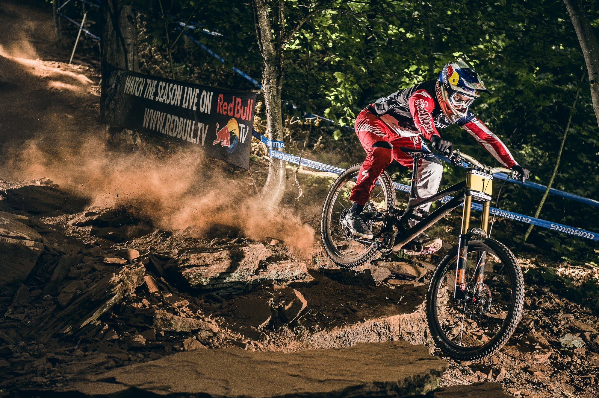
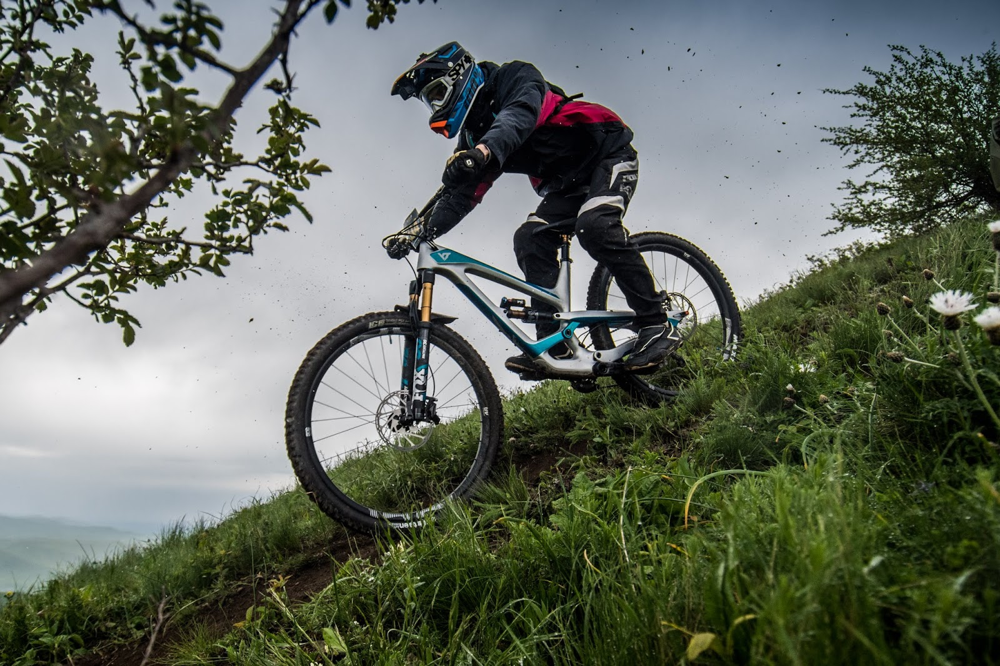
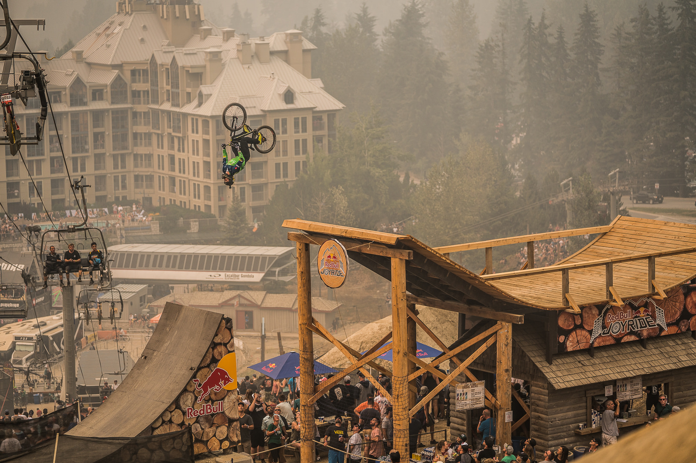
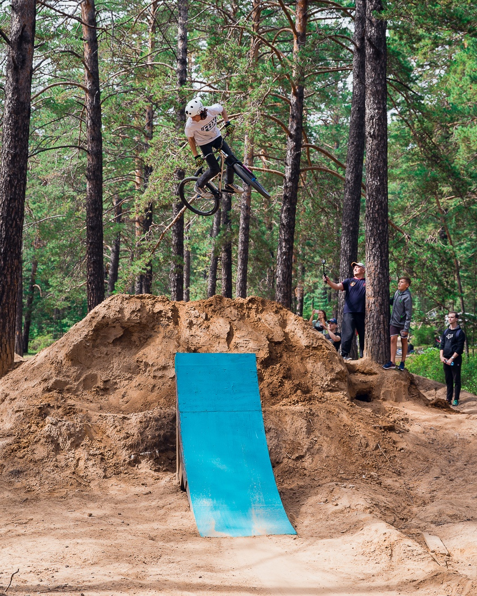

Эндуро: В мире проводится самая крупная серия гонок Enduro World Series, в России это РЭС - Российская Эндуро Серия.
Дёрт и Слоупстайл: Под эгидой организации FMB World Tour проводятся самые значимы дёрт и слоупстайл контесты. За участие в них райдерам начисляются очки и на сайте FMB World Tour есть общий рейнтинг с этими самыми очками. Помимо статусных контестов, по всему миру и на местах проводятся локальные контесты со своей атмосферой.

Контест в Чите. В 2020 году проводился локальный контест в городе Чита при спонсировании губернатора Забайкальского края, где я взял 3 первых места.